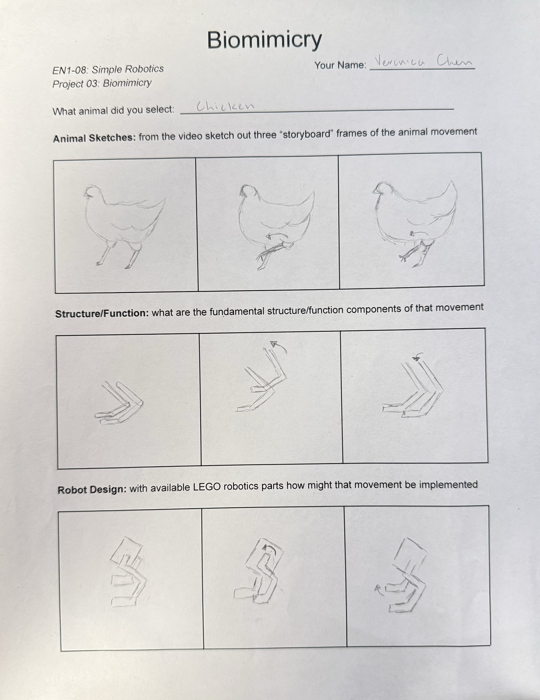
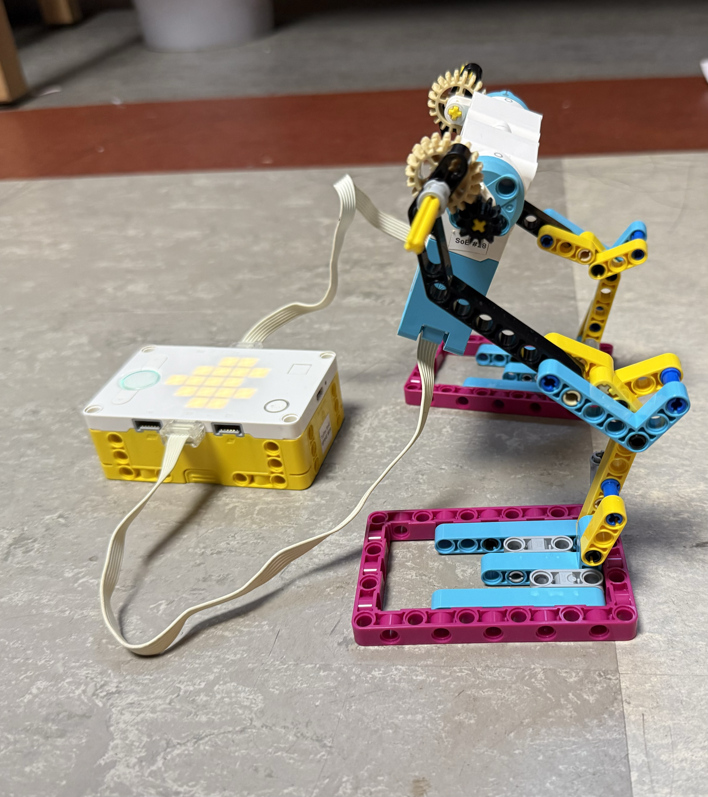

Project Portfolio



Project 3: Biomimicry
I focused on the structure of a chicken's leg and wanted to emphasize its z-shape. The z-shape of the leg acts as a shock absorber which allows them to walk efficiently while the shape also allows the feet to be under the center of mass, preventing it from tipping over. I went through multiple trials of adjusting the position of the motors and hub that would allow the robot to move forward but throughout all the trials the legs stayed put while the hub and motors moved in the circular path meant for its legs. I decided to use the hub as a way to power the motors and this allowed the legs to move forward. Although the movement did not end the way I imagined, the shape of the legs executed its purpose accurately by keeping the robot balanced.